Learning Goals
At the end of this Tutorial, you will be able to:
- Recognise the structure of a hyperlink.
- Understand the difference between absolute and relative hyperlinks.
- Add hyperlinks to sample web pages.
About hyperlinks
Hyperlinks, or more simply links, enable users to click or tap their way from one web page to another web page, on the same or different website.
You can also use hyperlinks to go from one section of a web page to another.
The general format of a hyperlink in HTML is as shown below.
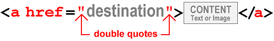Note the following:
- A hyperlink begins with an opening <a> (for ‘anchor’) tag.
- Hyperlinks end with the closing </a> tag.
- Inside the opening <a> tag is the href attribute that is followed by an equal to sign (=).
- The href attribute holds, within quotation marks, the link destination. This is the location to where the user will be taken when they click or tap on the link.
Hyperlinks typically have the following format:
<p>To learn more, please click <a href="webpage.html">here</a>.</p>
The above HTML tag would produce the following result.
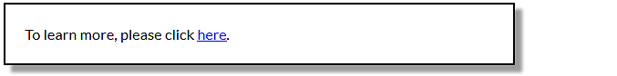This is an example of a hyperlink placed around an item of text. In this case, the word ‘here’.
Hyperlinks can also be placed around an image, as follows.
<p>Please click on the picture of a cat below.</p> <a href="webpage.html"><img src="cat.jpg" alt="cat"></a>
This second example would produce the following result.
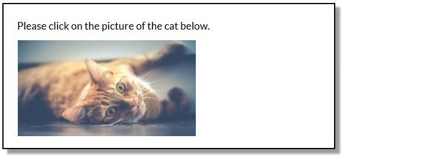Hyperlinks: same or different website?
One way of looking at hyperlinks is to ask: what is the destination of the link? Where will it send the user to?
In terms of their destination, you can think of hyperlinks as of two types:
Hyperlinks with absolute URLs
An absolute URL contains the full address of the web page being linked to, and begins with the http:// or https:// protocol.
Absolute URLs will always include the domain (website) name and typically also the name of a particular web page and perhaps too the folder that contains it.
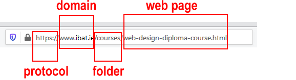You use absolute URLs when you want to link from one website to a different website – that is, to a website with a different domain name.
Hyperlinks with relative URLs
If you are linking between web pages of the same website, you do not need to include the http:// or https:// protocol or the website domain name.
It is enough to enter only the web page name, such as:
services.html
or
privacy-statement.html
And perhaps also the folder that contains the web page, such as
products/shoes.html
or
services/financial/insurance.html
For example, the relative hyperlink below will take the user to a different page within the same folder of the same website.
<p>Read about our <a href="about-us.html">team members</a>.</p>
You will commonly see relative hyperlinks used in navigation menus that can lead users to the various pages of a website.
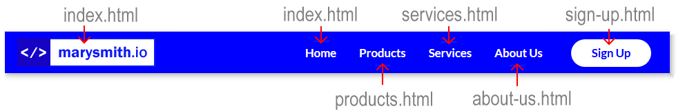Hyperlinks: same or new web browser tab?
You can choose to display a linked-to (‘destination’) web page in the same or in a new tab of your web browser.
Consider the example of a web page named page-1.html that contains a hyperlink to a second web page named page-2.html.
New page, same browser tab
In the first case below, the linked-to web page named page-2.html replaces the current page-1.html web page in the user’s web browser tab.
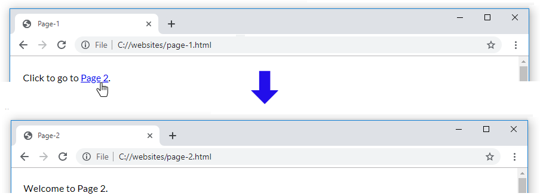In the page-1.html web page, the HTML link code would be as follows:
<p>Click to go to <a href="page-2.html">Page 2</a>.</p>
New page, new browser tab
In the second case below, the linked-to page-2.html web page opens in a new tab of the user’s web browser. The original web page is still displayed in the original web browser tab.
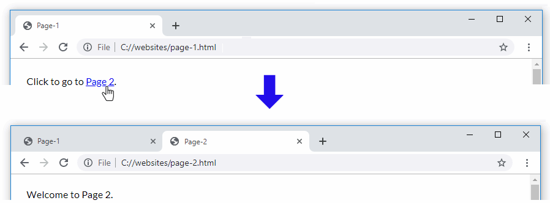In the page-1.html web page, the HTML code for this open in a new tab link would be as follows:
<p>Click to go to <a href="page-2.html" target="_blank">Page 2</a>.</p>
Your hyperlink now has two attributes:
- The href attribute value contains the destination of the hyperlink.
- The target attribute with its value of "_blank" (within double quotes) forces the new page to open in a tab of the user’s web browser.
The order of the two attributes inside the opening tag of a hyperlink does not matter.
For example, both of these hyperlinks are correct.
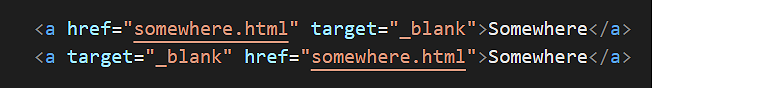But ensure you separate the two attributes from each other by a single space. For example, both these hyperlinks are correct. And for the same reason.
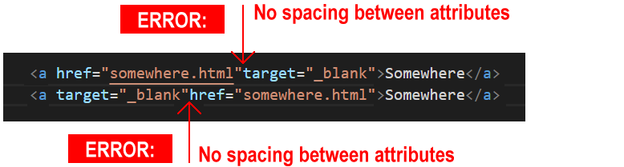In the next section of this Tutorial you will add hyperlinks to a web page you created previously.
Adding hyperlinks to your van Gogh page
In this section, you will work with the van Gogh sample web page.
You created this web page and stylesheet in the Working with Images Tutorial, and later updated it in the Working with Google Fonts Tutorial.
- In VS Code, open the page-4.html file in your exercises/van-gogh folder.
- Directly under the first image, “Bedroom in Arles”, copy-and-paste the following new paragraph and empty hyperlink:
<p><b>On view</b>: <a href="">Vincent van Gogh Museum, Amsterdam</a></p>
- Directly under the second image, “The Yellow House” on about line 33, copy-and-paste the following new paragraph and empty hyperlink:
<p><b>On view</b>: <a href="">Vincent van Gogh Museum, Amsterdam</a></p>
- Directly under the third image, “The Cafe Terrace at Night” on about line 38, copy-and-paste the following new paragraph and empty hyperlink:
<p><b>On view</b>: <a href="">Kröller-Müller Museum, Otterlo</a></p>
- And directly under the fourth and final image, “The Starry Night” on about line 44, copy-and-paste the following new paragraph and empty hyperlink:
<p><b>On view</b>: <a href="">The Museum of Modern Art, New York</a></p>
- Save your web page and view the result in your browser. All four images should now have text with empty hyperlinks under them. 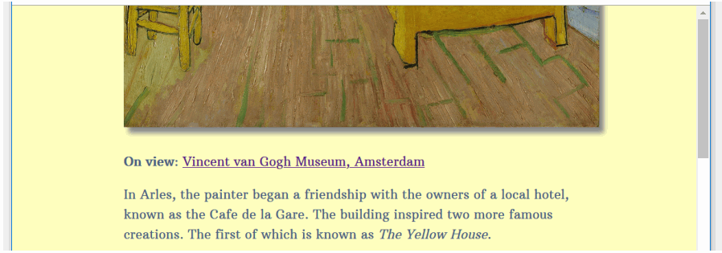
- For each of the four hyperlinks, one after the other, add the following values to their href attribute (inside the pair of double quotes):
https://www.vangoghmuseum.nl/en/collection/s0047V1962https://www.vangoghmuseum.nl/en/collection/s0032V1962https://krollermuller.nl/en/vincent-van-gogh-terrace-of-a-cafe-at-night-place-du-forum-1https://www.moma.org/collection/works/79802 - Save your web page and view the result in your browser. Click the four hyperlinks to ensure they all work correctly.
- Finally, add this attribute inside each of the four opening hyperlink tags:
target="_blank"
Ensure you enter a single space between the attributes in your hyperlink opening tags. - Save your web page and, in your web browser, verify the four hyperlinks all work correctly.
✅ That’s it. You are now finished working on your Van Gogh web page.
About internal hyperlinks
Hyperlinks are not just for linking to web pages or other files. You can also create a hyperlink to link to a part of a web page.
So-called internal hyperlinks are commonly found on lengthy web pages with large amounts of content. They enable the web designer to offer a “Table of Contents” at the top of the page that users can click/tap to navigate to a particular section of that web page.
Pages on Wikipedia typically include internal hyperlinks. For example, click the link below to open a Wikipedia page in a new browser tab for the Steve Goodman song, City of New Orleans.
After some introductory text, you can see a number of internal hyperlinks that will bring you to different parts of the same web page.
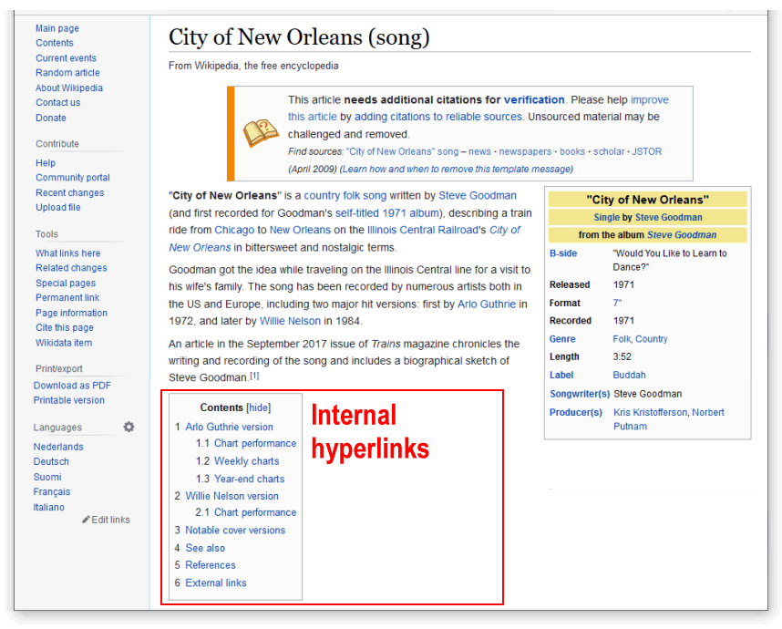If you click on any of these links, notice how the URL (web address) in your browser changes.
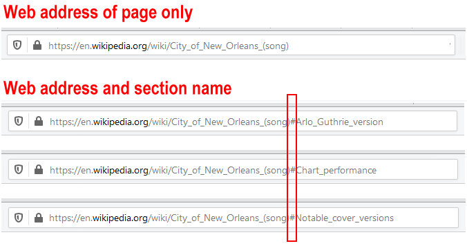You can see that the web address is now composed of two parts:
- The address of the web page, and
- The name of a section of the web page
The two parts of the web address are separated by the hash # character. A linked-to section of a web page is known as a document fragment.
Internal hyperlinks and named anchors
Consider the basic example where you want to offer visitors a “Table of Contents” at the top of a web page.
You might begin by entering the following:
<h2>Contents</h2> <p>Introduction</p> <p>Section One</p> <p>Section Two</p> <p>Section Three</p> <p>Summary</p>In a web browser, this will display as shown below. 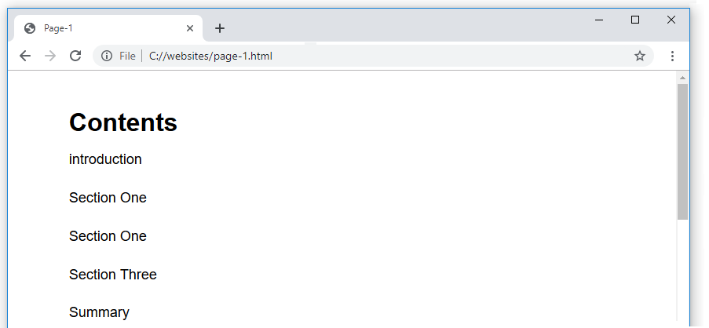
Next, you would add the internal hyperlinks. Note how the link destinations inside the href attributes always start with the # hash character.
<h2>Contents</h2> <p><a href="#introduction">Introduction</a>/<p> <p><a href="#one">Section One</a>/<p> <p><a href="#two">Section Two</a>/<p> <p><a href="#three">Section Three</a>/<p> <p><a href="#summary">Summary</a>/<p>
Your “Table of Contents” now look like a list of hyperlinks.
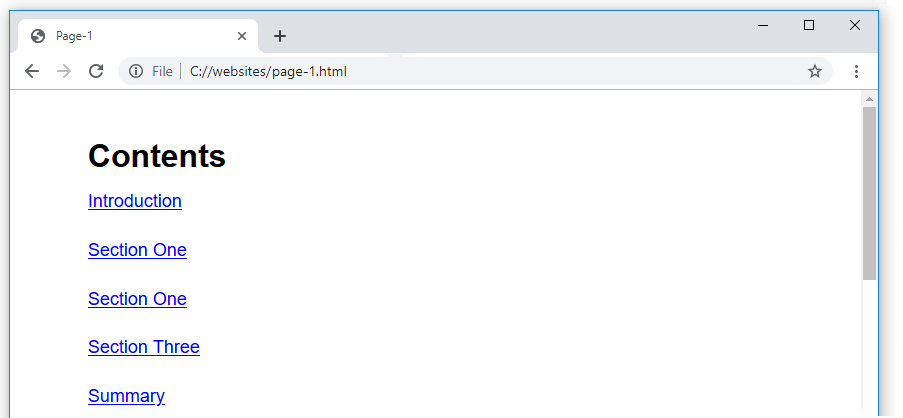But the hyperlinks have no destinations – they do not lead anywhere.
Your final step is to add destination IDs. These are the locations in the page to which the hyperlinks will take the user. See the example below.
<h3 id="three">Section Three</h3>
In the remainder of this Tutorial, you will add and style internal hyperlinks using a web page and stylesheet file you previously created.
Adding internal hyperlinks to your Tourism page
In this section, you will work with the sample page-5.html web page in your websites/exercises folder.
You created this web page and stylesheet in the Working with Images Tutorial, and later updated it in the Working with Google Fonts Tutorial.
- In Visual Studio Code, open the following file:
page-5.html
- Directly uner the main <h1> heading of “Ireland’s Top Five Visitor Attractions”, copy-and-paste the following:
<p><a href="#guinness">1: Guinness Storehouse, Dublin</a></p> <p><a href="#cliffs-of-moher">2: Cliffs of Moher, Co. Clare</a></p> <p><a href="#dublin-zoo">3: Dublin Zoo</a></p> <p><a href="#aquatic-centre">4: National Aquatic Centre, Dublin</a></p> <p><a href="#kells-tcd">5: Book of Kells Exhibition, Trinity College, Dublin</a></p>
- Save the page-5.html web page and view it in your web browser.
You can see the five items look like hyperlinks – but they are not clickable. They do not lead anywhere.
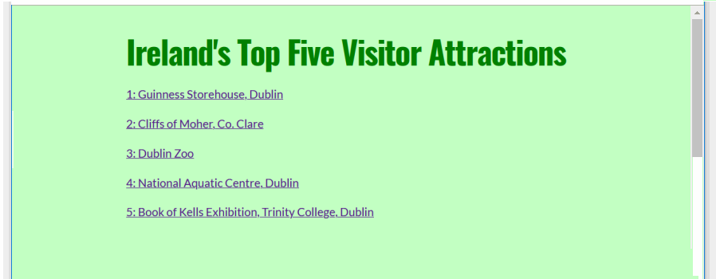This is because the five link destinations do not yet exist. Let’s add these now.
Adding the destination IDs
For the five internal hyperlinks, you will now add their link destinations.
- In your page-5.html web page, add five destination IDs, one for each of the <h2> sub-headings under the “Contents” list at the top of the page.
<h2 id="guinness">Guinness Storehouse, Dublin</h2>
<h2 id="cliffs-of-moher">Cliffs of Moher, Co. Clare</h2>
<h2 id="dublin-zoo">Dublin Zoo</h2>
<h2 id="aquatic-centre">National Aquatic Centre, Dublin</h2>
<h2 id="kells-tcd">Book of Kells Exhibition, Trinity College, Dublin</h2>
Note that you do not add the hash # character before the link destinations. - Save the web page and view it in your web browser.
The five internal hyperlinks at the top of the web page should now work correctly.
The smooth scrolling effect
You can see that, when clicked or tapped, the internal page links scroll smoothly down to their respective destinations further down the web page.
This is the result of adding the scroll-behavior style rule to the RESETS section of the top of the linked stylesheet file.
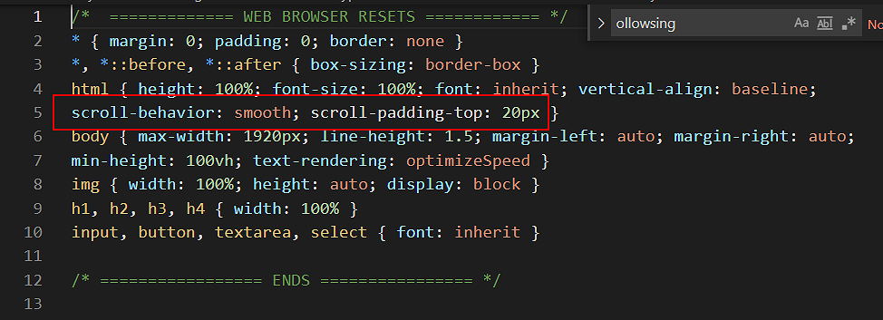A related style rule, for scroll-padding-top, provides a vertical offset when the destination link is scrolled to.
Adding a ‘Back to top‘ hyperlink
Let’s add one further internal hyperlink: one that takes the user back up to the top of the web page.
Here are the steps.
- At the very top of the page-5.html web page, replace the current opening <body> tag with the following that includes a destination ID.
<body id="top-of-page">
This will be the destination for the ‘Back to top‘ internal hyperlink. - Next, near the end of the web page, just before the closing </section> tag, add the following internal hyperlink.
<p><a href="#top-of-page">Return to top of page</a></p>
The end of your web page should now look similar to that below. 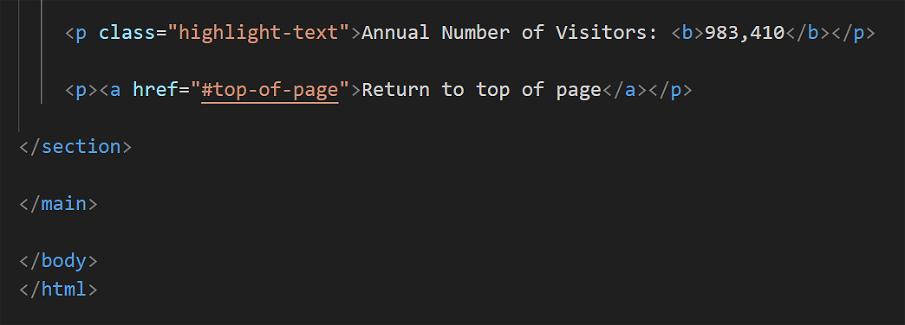 - Save your web page and verify the ‘Back to top‘ link works correctly.
✅ That’s it. You are now finished working on your sample web page.
Uploading your files to GitHub
You are now ready to upload your work to your account on GitHub.
- Open a new tab in your web browser and go to github.com. If you are not already signed in to your GitHub account, sign in now.

- On your GitHub home page, click the ‘repo’ that holds your web pages. Its name will look as follows, where username is your chosen username on GitHub.
username.github.io

- On the next GitHub screen displayed, near the right of the screen, you can see a button named Add file. Click on it.

- From the dropdown list displayed, choose the option Upload files.

- In File Explorer (Windows) or Finder (Apple Mac), drag-and-drop your 📁 exerciss sub-folder to upload it io your repository on GitHub. 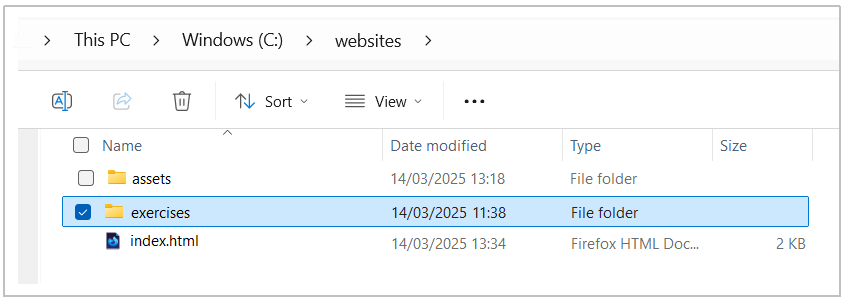
- Scroll down to the bottom of the GitHub screen, and accept or edit the short message (Add files via upload) in the Commit changes box.
- Finally, click the green Commit changes button to upload your files.

Your updated web pages are now published on GitHub at web addresses similar to the following:
https://username.github.io/exercises/page-4.html
https://username.github.io/exercises/page-5.html
It may take a few minutes for your uploaded files to appear on GitHub.